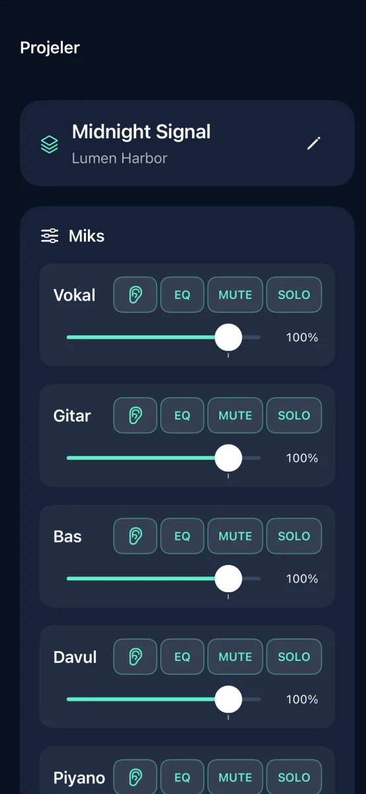
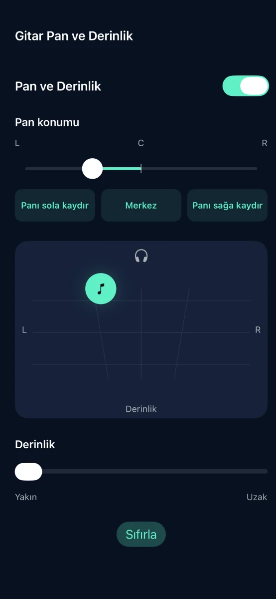
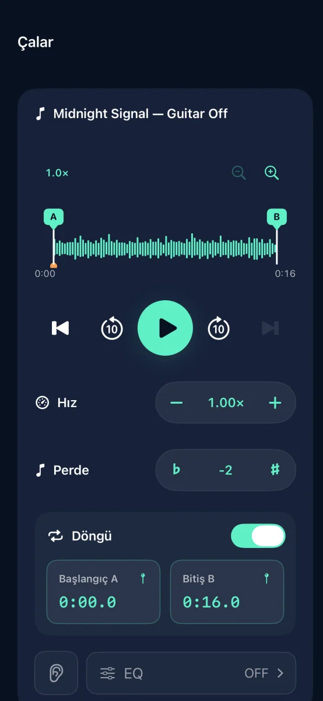

iPhone için parça ayırma ve müzik çalışma uygulaması

Sevdiğin şarkıları altyapıya dönüştür
Şarkıyı altı kanala ayır, çalacağın partiyi sustur.
Yakında App Store’da

Özellikler



iPhone için parça ayırma ve müzik çalışma uygulaması
Ses ayırma cihazınızda yapılır. Hesap gerekmez.
Her kanalın ses düzeyini, sessiz, solo, EQ, pan ve derinlik ayarlarını düzenleyin. M4A, MP3 veya WAV olarak dışa aktarın.
Başarıyla tamamlanan üç ayırma işlemi ücretsizdir. Tek seferlik satın alımla sınırsız ayırma açılır. Abonelik yoktur.
Çevrimiçi dinlenen parçalar ve DRM korumalı ses içe aktarılamaz. Kullanma hakkınız olan sesleri kullanın.
Yardım ve Destek ↗